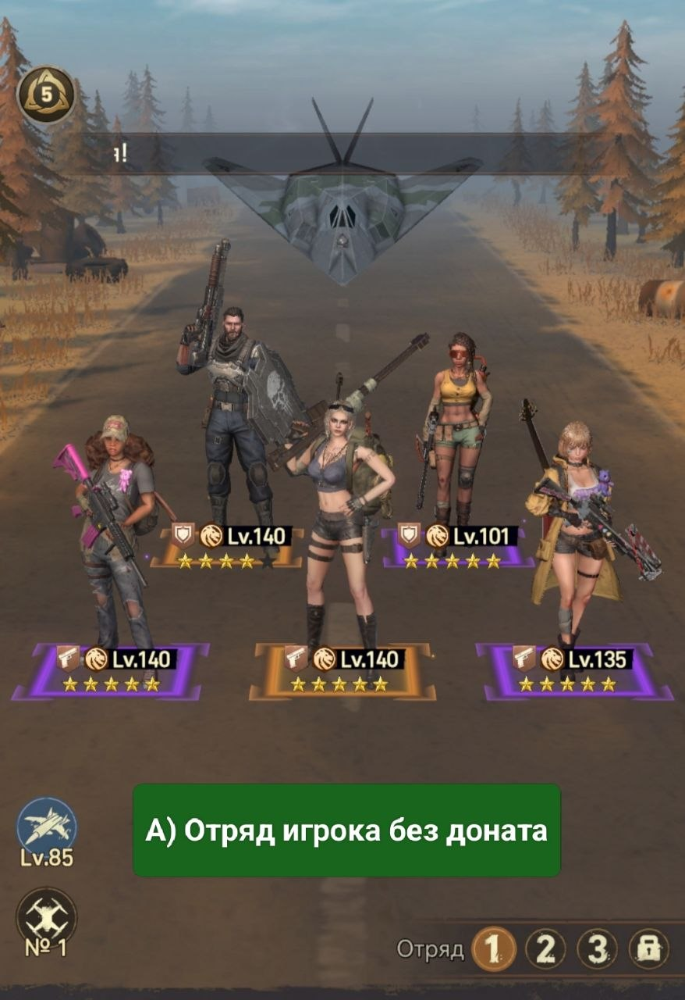
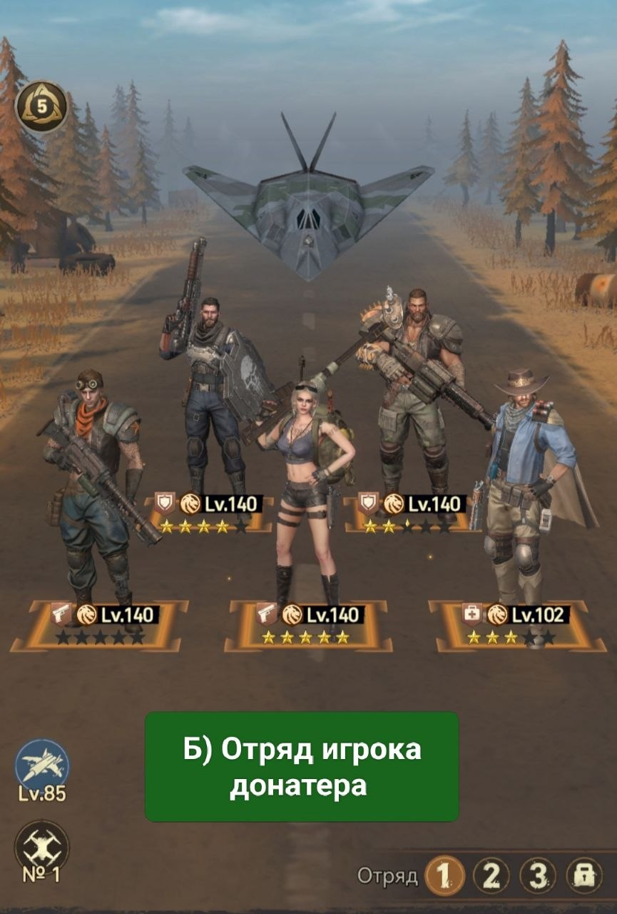

🥇 Отряд 1

🥇 Отряд 1 Первый отряд по заданной системе/задумке от разработчиков игры будет собираться из героев-Воинов, так как именно они открываются первыми. А) если вы не донатер (не покупали золотых/UR героев): • Передовая линия 🛡️ - Арнольд + Зара/Токсина • Задняя линия - Монро + Ария и Нора. В дальнейшем Картер заменит Нору.

Б) если вы донатер и покупали всех золотых героев-Воинов: • Передовая линия 🛡️ - Арнольд и Дирк • Задняя линия - Монро, Люциан и Картер.